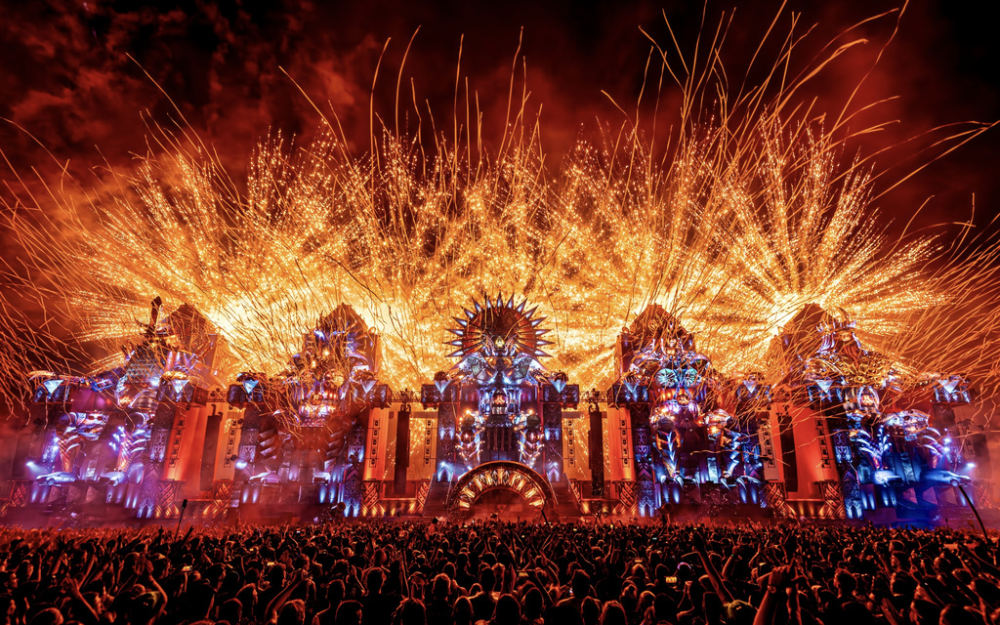
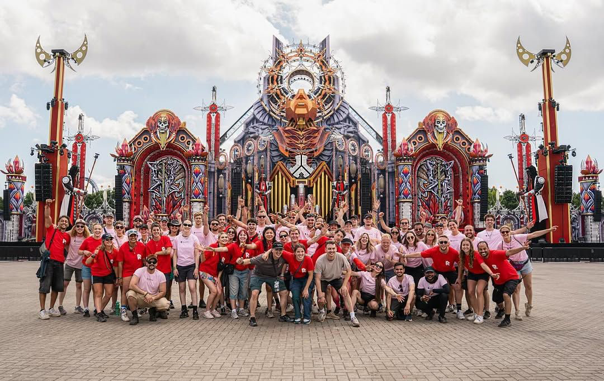
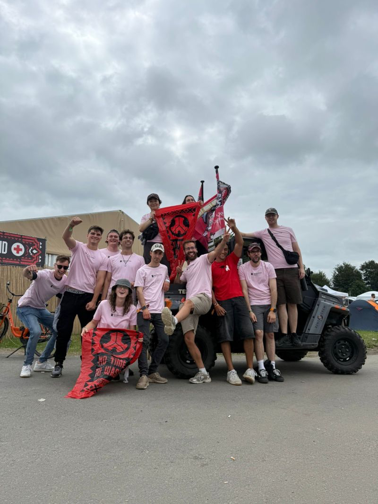

Case study / 2025
Defqon.1
Project overview
Defqon.1 2025 is a large-scale multi-day festival in Biddinghuizen with extensive camping, hospitality and crew operations. I work with Revolution Academy as Assistant Crew Manager, supporting supervisors across multiple operational areas throughout the festival weekend.
My role
Operational
Crew Support.
- Support supervisors across multiple operational areas, moving between camping, hospitality, runners and check-in based on live needs.
- Assist with crew and volunteer coordination, helping maintain staffing coverage and supporting supervisors during active shifts.
- Support camping and sustainability operations, including clean-up activities and distribution tasks across the campsite.
- Assist hospitality operations, supporting the preparation and service of food and drinks for crew and volunteers.
- Support check-in operations, assisting with crew arrivals, attendance and communication around upcoming shifts.
- Carry out runner and logistics tasks, transporting materials, water and crew wherever operational support is required.
Project context
The role moves across different departments rather than remaining assigned to a single operation. I support supervisors where additional hands are required, helping with crew coordination, practical tasks and the day-to-day logistics behind the festival.
Camping, hospitality, runners and check-in operate in parallel, alongside large volunteer teams supporting activities such as camping clean-up and No Time to Waste. The focus stays on keeping teams supported and responding quickly when staffing or logistical needs change during the live days.
Experience
Supporting the operation wherever the pressure moves.The role connects crew coordination, logistics, hospitality, camping and check-in across a large-scale festival environment.
Gallery
Project material.


